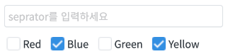
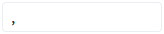

Checkbox의 'getValue' 메소드를 사용하여 선택된 항목의 값을 가져오는 예제입니다. 값의 구분자는 'getValue' 메소드의 첫 번째 인자로 전달된 문자열을 사용하고, 전달된 값이 없으면 'separator' 속성에 설정된 값을 사용합니다. 'separator' 속성의 기본 값은 공백입니다.
선택된 항목의 값 가져오기
선택된 항목의 값에 구분자를 지정하여 가져오기
Checkbox 항목과 값은 다음과 같습니다.
Red: red
Blue: blue
Green: green
Yellow: yellow
1
STEP 1: Checkbox에서 항목을 선택합니다.
'Blue' 항목과 'Yellow' 항목을 선택합니다. Input에는 값이 입력되지 않은 상태입니다.
Image 1.브라우저(Chrome) 실행 예시

2
STEP 2: '선택된 항목의 값 가져오기' 버튼을 클릭하고 로그 영역을 확인합니다.
선택된 항목의 값이 공백을 구분자로 사용하여 반환됩니다.
Example 1.Log
[14:23:20] values: blue yellow
3
STEP 3: Input에 구분자로 사용할 문자열을 입력합니다.
Input에 ','(쉼표)를 입력합니다.
Image 2.브라우저(Chrome) 실행 예시

4
STEP 4: '선택된 항목의 값 가져오기' 버튼을 클릭하고 로그 영역을 확인합니다.
선택된 항목의 값이 ',' 문자열을 구분자로 사용하여 반환됩니다.
Example 2.Log
[14:52:54] values: blue,yellow
Checkbox의 'getValue' 메소드를 사용하여 스크립트를 작성합니다.
메소드의 첫 번째 인자가 전달되지 않으면, 'separator' 속성에 설정된 값이 구분자로 사용됩니다.
Example 3.Script
// Checkbox 'cbx_main'에서 선택된 항목의 값을 가져옵니다. // 선택된 값의 구분자는 'separator' 속성에 설정된 값을 사용합니다. var _value1 = cbx_main.getValue(); // Checkbox 'cbx_main'에서 선택된 항목의 값을 가져옵니다. // 선택된 값의 구분자를 ','(쉼표)로 사용합니다. var _value2 = cbx_main.getValue(",");
seprator
getValue(separator)